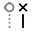

De geometrie wijzigen
In TecZone Bend heeft u een krachtige 2D-tekeneditor om uw geometrie aan te passen, op te ruimen of er iets aan toe te voegen. Gebruik sneltoets S om in de tekenmodus te komen. De editor toont het stuk in uitgeklapte weergave.

Klik in de afwikkelingsweergave op het pictogram Sketch  of druk op de sneltoets S.Er wordt een menu geopend met verschillende pictogrammen voor het bewerken van het uitgevouwen stuk:
of druk op de sneltoets S.Er wordt een menu geopend met verschillende pictogrammen voor het bewerken van het uitgevouwen stuk:

Venster Tekenen
| Pictogram | Symbool | Betekenis |
|---|---|---|
|
Select |
Selecteer objecten, lijnen, invoeren enz. |
|
Line |
Teken een lijn |
|
Connected line |
Tekent een willekeurig aantal lijnen |
|
Parallel |
Tekent een parallel aan een lijn |
|
Normal |
Tekent een raaklijn aan een curve |
|
Bendline |
Tekent een normale lijn naar een lijn |
|
Center-Point Arc |
Teken een buigrand |
|
2-Point Arc |
Tekent een cirkelboog vanuit een middelpunt, startpunt en eindpunt |
|
3-Point Arc |
Tekent een cirkelboog door twee gedefinieerde punten (begin- en eindpunt) |
|
Tangent Arc |
Tekent een cirkelboog die tangentieel aan de tekenelementen |
|
Rectangle |
Tekent een rechthoek |
|
Center-Point Rectangle |
Tekent een rechthoek vanuit het midden |
|
Circle |
Tekent een cirkel. Selecteer het middelpunt van de cirkel en sleep de cursor om de straal te definiëren of voer een waarde in voor de straal |
|
2-Point Circle |
Tekent een cirkel volgens de omtrek. Selecteer een punt op de omtrek, dan een tweede punt en een derde punt. |
|
3-Point Circle |
Tekent een cirkel volgens de omtrek. Selecteer een punt op de omtrek, dan een tweede punt en een derde punt. |
|
2-Tangent Circle |
Tekent een cirkel met twee raaklijnen. Voer de diameter van de cirkel in, selecteer vervolgens de eerste raaklijn en dan de tweede raaklijn. |
|
3-Tangent Circle |
Tekent een cirkel met drie raaklijnen. Voer de diameter van de cirkel in en selecteer vervolgens de eerste raaklijn, dan de tweede raaklijn en dan de derde raaklijn. |
|
Inscribed Polygon |
Tekent een cirkel met drie raaklijnen. Voer de diameter van de cirkel in en selecteer vervolgens de eerste raaklijn, dan de tweede raaklijn en dan de derde raaklijn. |
|
Circumscribed Polygon |
Tekent een veelhoek. Specificeer het aantal zijden en selecteer een middelpunt en het midden van een zijrand |
|
Edge Polygon |
Tekent een veelhoek. Specificeer het aantal zijden en definieer het startpunt en eindpunt van een zijde. |
|
Fillet |
Rondt de hoek af op het hoekpunt van twee tekenelementen met een ingevoerde radius, waarbij een tangentiële cirkelboog ontstaat |
|
Chamfer |
Creëert een schuine rand op de hoek van het snijpunt van twee tekenelementen |
|
In-Fillet |
Omzoomt de hoek op het snijpunt van twee tekenelementen met een ingevoerde radius |
|
Corner Step |
Omzoomt de hoek op het snijpunt van twee tekenelementen met een rechthoek. De grootte van de rechthoek kan vooraf worden ingevoerd. |
|
Edge Recess |
Creëert een rechthoekige vrije snede. U moet de hoekafstand en diepte van de vrije snede invoeren en vervolgens een hoek selecteren. |
|
Edge U-Cut |
Creëert een vrije snede in de vorm van een langgat. U moet de hoekafstand, breedte en diepte van de vrije snede invoeren en vervolgens een hoek selecteren. |
|
Edge V-Cut |
Creëert een driehoekige vrije snede. U moet de hoekafstand, breedte en diepte van de vrije snede invoeren en vervolgens een hoek selecteren. |
|
Keyslot |
Creëert een stoomkanaal in een cirkel met de ingevoerde waarden. |
|
Fillet 3-Seg |
Rondt drie gekoppelde tekenelementen af |
|
Extend |
Selecteer het tekenelement dat moet worden uitgebreid |
|
Trim |
Selecteer het tekenelement dat op lengte moet worden gemaakt |
|
Join |
Wordt gebruikt om verschillende afzonderlijke polylijnen op een lengte te maken en samen te voegen tot een |
|
Offset |
Verschuif een of meer tekenelementen, getekende modelranden of modelvlakken met een gespecificeerde afstand |
|
Move |
Selecteer een tekenelement met ctrl, selecteer een referentiepunt en verplaats het tekenelement |
|
Rotate |
Selecteer een tekenelement ctrl, selecteer een rotatiecentrum en vervolgens een startpunt en een eindpunt om het tekenelement te draaien |
|
Scale |
Selecteer een tekenelement met ctrl, selecteer een basispunt en vervolgens een startreferentiepunt en een eindreferentiepunt om het tekenelement te schalen |
|
Mirror |
Selecteer een tekenelement met ctrl, dan het begin van de spiegellijn en dan het einde van de spiegellijn om het tekenelement te spiegelen |
|
Rectangle Array |
Gebruik lineaire patronen om meerdere gerefereerde kopieën van een of meer tekenelementen te maken die u op gelijke afstand langs een of twee lineaire paden kunt plaatsen. Klik op het lineaire patroon en voer de gewenste waarden in |
|
Polar Array |
Gebruik cirkelvormige patronen om meerdere gerefereerde kopieën van een of meer tekenelementen te maken die u op gelijke afstand rond een as kunt plaatsen. Klik op cirkelvormige patronen en voer de gewenste waarden in |
|
Union |
Selecteer twee of meer gesloten tekenelementen om oppervlakken met elkaar te combineren |
|
Intersection |
Selecteer twee of meer gesloten tekenelementen om een snijvlak van geselecteerde elementen te genereren |
|
Subtraction |
Selecteer twee of meer gesloten tekenelementen om het oppervlak bij te snijden |
|
Copy Notch |
Met deze tool kunt u meerdere kopieën maken van een uitklinking langs een rand. Voer eerst de afstand tussen de kopieën in en het aantal kopieën van de uitklinking dat u wilt maken. Selecteer vervolgens de uitklinking door te klikken op de tweeregelige segmenten die grenzen aan de uitklinking |
|
Delete Notch |
U kunt een uitklinking op een hoek of langs een lijnsegment verwijderen met deze tool. Klik op de tweeregelige segmenten die grenzen aan de uitklinking en de uitklinking wordt verwijderd |
Mirror Notch |
U kunt een uitklinking op een hoek of langs een lijnsegment spiegelen met deze tool. Klik op de tweeregelige segmenten die grenzen aan de uitklinking en de uitklinking wordt gespiegeld |
|
|
Spline |
Om een nieuwe spline te starten, klikt u op het startpunt en terwijl u op volgende punten klikt, wordt de spline gemaakt. Als u de spline wilt sluiten, drukt u op de ALT-knop en klikt u vervolgens op |
|
Profile |
Voer basislengte, felshoogte, dikte, felshoek en binnenradius in en druk op enter om een profiel aan te maken |
|
Text |
Wordt gebruikt om tekst te tekenen die door de lasermachine op het stuk wordt gemarkeerd. Wanneer u op deze gereedschapsknop klikt, toont de invoerbalk invoervakken voor de tekst, de grootte en de draaihoek |
|
Truetype Text |
Wordt gebruikt om de vormen van tekens in elk TrueType-lettertype te nemen en om te zetten in polylijnen. Laseruitrusting kan vervolgens op deze polylijnen worden toegepast en ze kunnen worden gesneden.De eerste keer dat op deze knop wordt geklikt, verschijnt het dialoogvenster Lettertype, zodat u het lettertype kunt bepalen dat voor de tekst moet worden gebruikt |
|
Common Shape |
Wordt gebruikt om verschillende veelvoorkomende vormen te maken en deze in de tekening in te voegen. Wanneer u op deze knop klikt, verschijnt het dialoogvenster Vorm maken waarmee u kunt kiezen uit het palet van veelvoorkomende vormen |
|
Simple Dimension |
Selecteer het eerste dimensioneringspunt, dan het tweede dimensioneringspunt en positioneer de dimensioneringslijn |
|
Baseline Dimension |
Selecteer het eerste dimensioneringspunt, dan het tweede dimensioneringspunt en positioneer de dimensioneringslijn |
|
Continue Dimension |
Selecteer het eerste dimensioneringspunt, dan het tweede dimensioneringspunt, positioneer de dimensioneringslijn en selecteer het volgende dimensioneringspunt |
 |
Horizontal Ordinate Dimension |
Gewone afmetingen zijn een reeks afmetingen die worden gemeten vanaf de ordinaat nul in de tekening. Selecteer een referentiepunt en positioneer de dimensionering |
|
Vertical Ordinate Dimension |
Gewone afmetingen zijn een reeks afmetingen die worden gemeten vanaf de ordinaat nul in de tekening. Selecteer een referentiepunt en positioneer de dimensionering |
|
Angular Dimension |
Creëert een dimensionering voor een hoek. Selecteer de eerste regel en vervolgens de tweede regel waarop u de hoek wilt dimensioneren |
|
Radius Dimension |
Creëert een dimensionering voor een straal. Selecteer de cirkel waarop u de straal wilt dimensioneren. Dimensioneer de diameter met ctrl |
|
Center Point Radius Dimension |
Creëert een dimensionering met continue leider voor een straal. Selecteer de cirkel waarop u de straal wilt dimensioneren. Dimensioneer de diameter met ctrl |
|
Callout Dimension |
Wordt gebruikt om opmerkingen toe te voegen aan de tekening in de vorm van bijschriften. Om een bijschrift aan te maken: typ de tekst die moet worden weergegeven, klik u om aan te geven waarnaar de pijl moet wijzen, en klik opnieuw om aan te geven waar de tekst moet worden geplaatst. |
|
Segment Dimension |
Gebruik om dimensionering toe te voegen voor rechte lijnen en gebogen segmenten. Klik op het segment dat moet worden gedimensioneerd en klik opnieuw om de dimensie te positioneren. Of houd ingedrukt en klik op een segment om de dimensie automatisch te positioneren. |